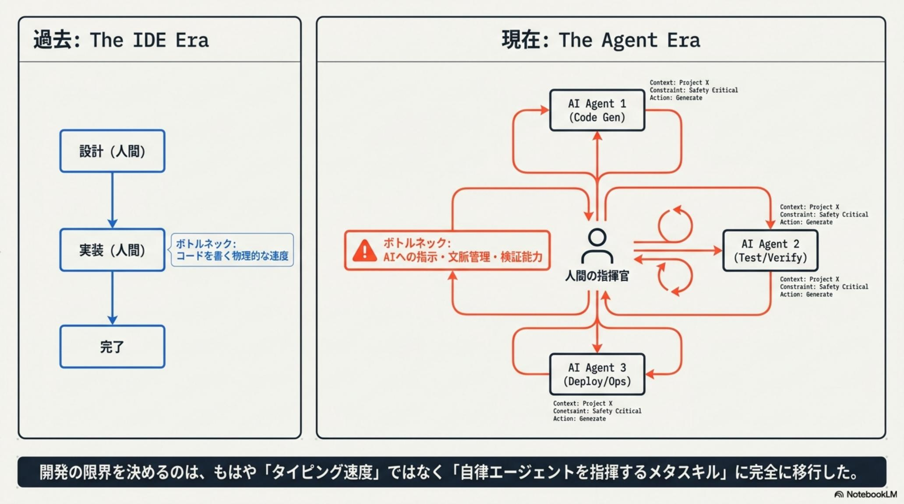
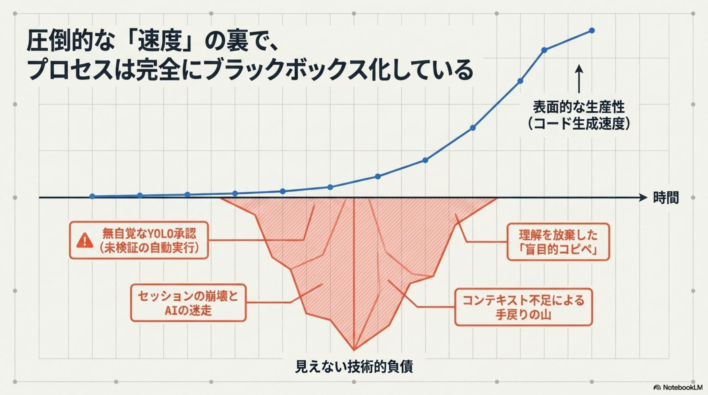
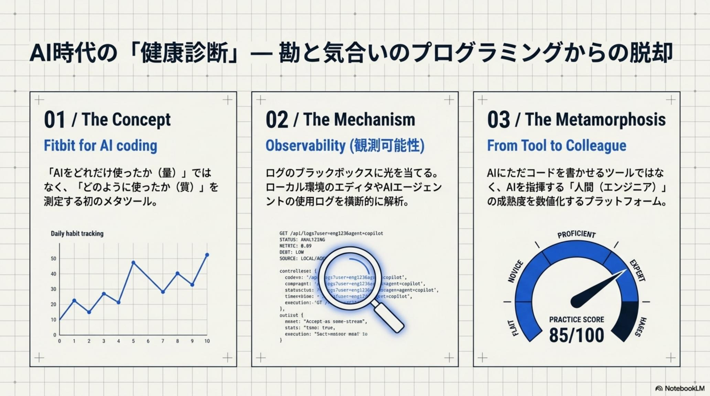
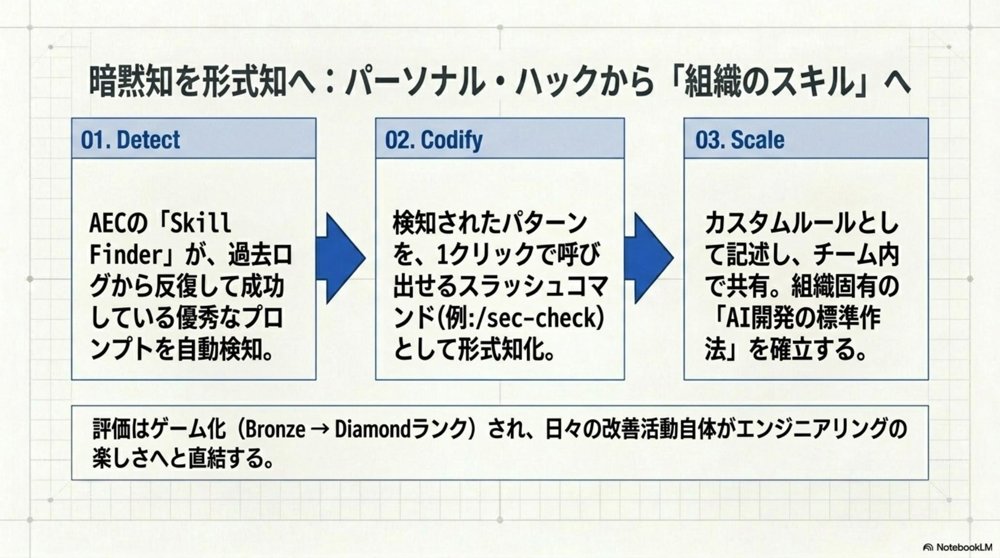
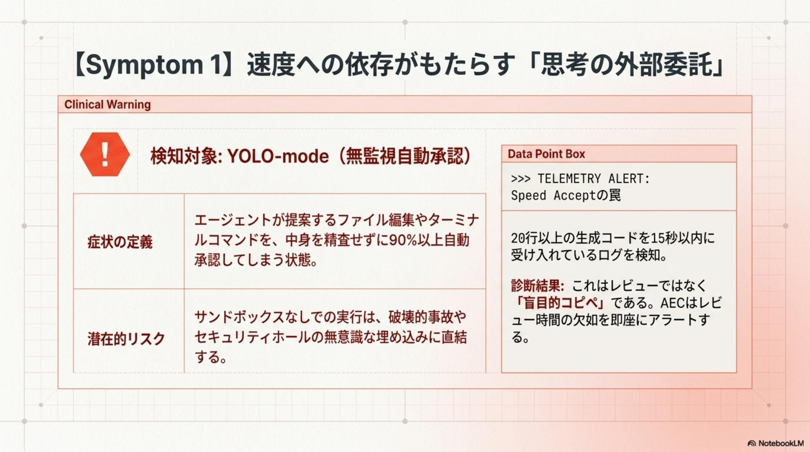
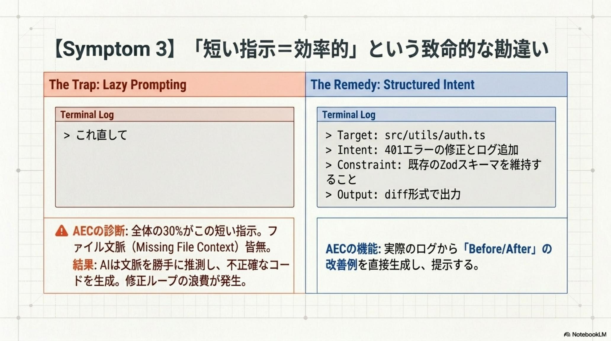
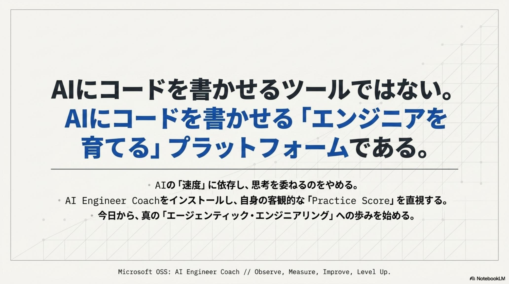
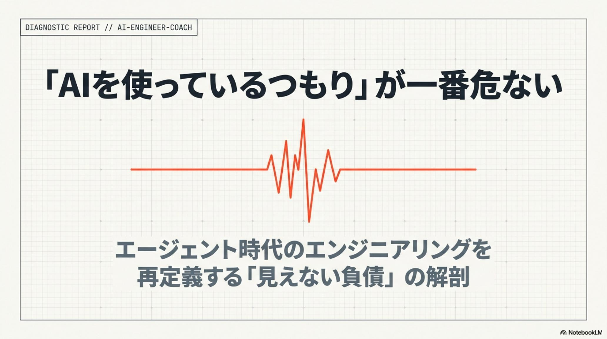

無自覚な YOLO 承認 / 未検証の自動実行
エージェントの提案（ファイル編集・コマンド実行）を無検証で承認し続ける安全工学上の欠陥。重大なシステム事故の誘発と、ガバナンス欠如による信頼性リスクの増大。
AI Engineer Coach · AI時代のエンジニアの「健康診断」 · Issue № 05/24
Cursor / Claude Code / GitHub Copilot の浸透で「開発速度の向上」はもはや議論の余地がない事実となった。しかしその影で、爆速のコード生成と引き換えに進行する「スキルの萎縮」と、無意識に積み上がる「見えない技術的負債」が、エンジニアリングの本質を揺るがしている。
Microsoft 有志チームの OSS AI Engineer Coach (AEC) が、開発プロセスのブラックボックスに AI Observability（可観測性） を持ち込む。45 の診断ルール × 5 つのメトリクス × Practice Score（85/100）× Bronze→Diamond の XP × Coding Moments ギャラリー × Skill Finder × Local-First（Read-only + ゼロ・テレメトリ）。Observe → Measure → Improve → Level Up サイクルで、AI に流される「オペレーター」から、AI を指揮する「アーキテクト」へ。

開発の限界を決めるのは、もはや「タイピング速度（コードを書く物理的な速度）」ではない。AI への指示・文脈管理・検証能力——自律エージェントを指揮するメタスキルへと完全に移行した。現代の真のボトルネックは、ここで暴かれる。

表面的な生産性（コード生成速度）は指数関数的に伸びる一方、水面下では「見えない技術的負債」が静かに膨張している。AI 普及により、エンジニアは無意識のうちに「効率化」という仮面を被った 4 つの構造的課題を積み上げる。
エージェントの提案（ファイル編集・コマンド実行）を無検証で承認し続ける安全工学上の欠陥。重大なシステム事故の誘発と、ガバナンス欠如による信頼性リスクの増大。
曖昧な指示と爆速の承認によるコード理解度と保守性の壊滅的低下。ブラックボックス化したコードの増大による将来的な修正コストの爆発を招く。
AI 活用の「勝ちパターン」が属人化し、組織としてのナレッジ共有が阻害される。チーム内での開発品質の極端な乖離と、組織的なエンジニアリング成熟度の停滞。
高度な分析のために機密ログを外部クラウドへ送信することに伴う情報流出リスク。コンプライアンス違反、あるいはセキュリティ制約によるイノベーションの機会損失。

勝負を分けるのは、もはや「AI をどれだけ使ったか（量）」ではない。「どのように使ったか（質）」を測定し、エンジニアの活動を「感覚」から「計測可能な工学」へ昇華させるAI Observability こそが、AI 時代のエンジニアリング再定義の起点である。

AEC は、エンジニアの行動を 「Observe → Measure → Improve → Level Up」 サイクルに統合する。以下の 5 つのメトリクス を用いて、AI との協働を「感覚」から「計測可能な工学」へと昇華させる。
AEC は単なる活動ログではない。エンジニアの行動を 5 つの座標軸に分解し、それぞれを「何が悪かったか」だけでなく「どう直すべきか」のコンテキストとともに 45 の診断ルールで評価する。AI に流されるオペレーターから、AI を指揮するアーキテクトへの昇格を、データで支援する。

特筆すべきは Skill Finder による「Detect → Codify → Scale」の連鎖だ。過去ログから反復して成功している優秀なプロンプトを自動検知し、1 クリックで呼び出せるスラッシュコマンド（例: /sec-check）として形式知化、カスタムルールとしてチームで共有——個人の「勝ちパターン」を組織固有の「AI 開発の標準作法」へ昇華させる。評価は Bronze → Diamond ランクでゲーミフィケーション化され、日々の改善活動自体がエンジニアリングの楽しさへ直結する。
AEC は臨床的アプローチで診断を下す。Clinical Warning と Data Point Box で構成された診断レポートが、エンジニアの「無自覚の負債」を白日のもとに晒し、具体的な改善アクションを処方する。


AEC が45 のルールで検知する代表的なアンチパターンと、それぞれに対応する具体的改善アクションを以下に提示する。リスク指標は「観測可能で具体的な数値」として定義され、診断の客観性を担保する。
AEC が提示する成長への 4 ステップは、Observe → Measure → Improve → Level Up。個人・テックリード・組織の 3 層すべてに共通する基本動作だ。
現状をデータで捉える。Cursor / Claude Code / GitHub Copilot 等の使用ログを横断的に解析し、自分の AI 活用の現状を可視化する。
成長を数値化する。5 メトリクス × 45 ルールで Practice Score を算出。コード生成量・承認時間・指示の長さなどから定点測定。
アンチパターンを是正する。具体的なプロンプト Before / After や、AEC が提示する4 要素テンプレートを試し、毎日修正を回す。
エージェント時代へ。アンチパターンだらけのオペレーターから、Practice Score の高得点者（Diamond ランク）へ。エージェンティック・エンジニアリングの極致へ。
AEC の究極のビジョンは、単にコードを書く支援をすることではない。「AI にコードを書かせるプロフェッショナルなエンジニアを育てる」ことにある。2026 年以降、エンジニアの真の差別化要因は AI モデル自体の性能ではなく、その強力な資源をいかに安全に・再現性高く・高品質に制御できるかというオーケストレーション能力へと完全に集約する。
AI に思考を委ねることに慣れ、スキルの衰退を許容するのか。それとも、AI Observability によって自身の行動を律し、AI を自律的な部下として統治する「エージェンティック・エンジニアリング」の極致を目指すのか。これが、今後数年間のエンジニアの生存境界線となる。まずは、あなた自身の Practice Score を直視することから始めよ。

AEC が告げるのは、AI 時代のエンジニアリングを成立させるための具体的な作業マップだ。立場ごとに最初の一歩は変わる。
自身の活用品質をPractice Score で直視。Bronze から Diamond までの XP システムで、スキルの研鑽をゲーミフィケーション化。Coding Moments ギャラリーで決定的な意思決定を記録し、思考の軌跡を強制的に振り返る。
組織としての「AI 使用の暗黙知」をカスタムルールとして形式知化・標準化。Skill Finder が個人の「勝ちパターン」を検知し、組織全体の再利用可能な資産へと変換。AI リテラシー底上げのコストを構造的に削減。
金融・医療・公的機関など機密性が求められる組織向け。Local-First 設計を徹底し、Read-only かつゼロ・テレメトリで解析を完結。「Governance without Data Exfiltration Risks（データ流出リスクのない統治）」を実現し、機密を保持したまま最新の AI イノベーションを享受する。
AI Engineer Coach は、AI にコードを書かせるツールではない。AI にコードを書かせる「エンジニアを育てる」プラットフォームである。— AI時代のエンジニアリング再定義 · AI Engineer Coach が解消する「見えない負債」と「成長の停滞」 · 2026-05-24

AI Engineer Coach 以外の 2026-05-24 主要トピックを併せてピックアップ。